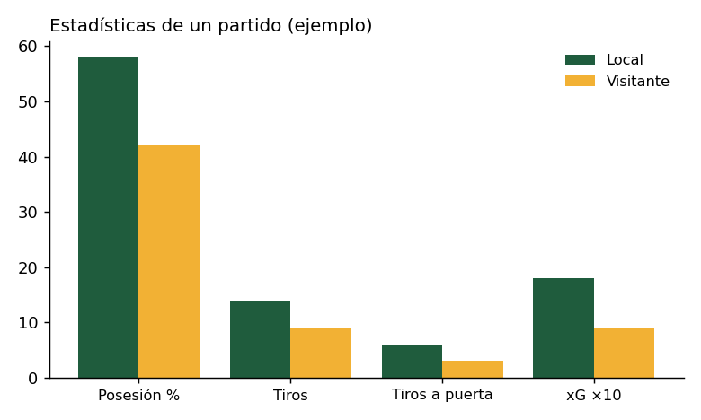

Tres pases para romper una defensa
Muchos goles no nacen de una genialidad individual, sino de una secuencia sencilla de pases bien hechos. En este análisis vemos cómo tres pases y una buena carrera sin balón pueden dejar a un delantero solo frente al portero.
La jugada en video
Paso a paso
La clave de esta jugada es que cada jugador hace su trabajo en el momento justo. Si uno de ellos se adelanta o se retrasa un segundo, la defensa tiene tiempo de reorganizarse.
- El mediocampista recibe en el centro del campo con espacio para girarse.
- El delantero baja a recibir. Al salir de la zona de los centrales, uno de ellos lo sigue y deja un hueco detrás.
- El extremo ataca ese hueco corriendo en diagonal hacia el área, a la espalda de la defensa.
- Pase filtrado y remate. El delantero le da el balón al primer toque y el extremo define antes de que llegue la cobertura.
Este tipo de jugada es muy común en equipos que juegan con 4-3-3, porque los extremos están abiertos y listos para correr hacia adentro. Si quieres repasar las reglas del juego, como el fuera de juego que esta jugada evita, consulta el sitio oficial de la IFAB.
Estadísticas del partido

Los números confirman lo que se vio en la cancha: el equipo local tuvo más el balón y, sobre todo, generó ocasiones de mejor calidad. Su xG casi duplica al del visitante, lo que significa que sus tiros fueron desde posiciones mucho más peligrosas.
El dato más interesante es el de tiros a puerta. El visitante remató nueve veces, pero solo tres fueron al arco: muchos de sus tiros fueron desde lejos y con poca probabilidad de gol.
| Estadística | Local | Visitante |
|---|---|---|
| Posesión (%) | 58 | 42 |
| Tiros | 14 | 9 |
| Tiros a puerta | 6 | 3 |
| xG (goles esperados) | 1.8 | 0.9 |
| Pases completados | 512 | 371 |
Datos de ejemplo usados para explicar cómo se leen las estadísticas.